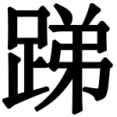

第五十三回
禅主吞餐怀鬼孕
黄婆运水解邪胎
德行要修八百，阴功须积三千。[1625]
均平物我与亲冤，始合西天本愿。
魔兕刀兵不怯，空劳水火无愆。
老君降伏却朝天，笑把青牛牵转。
话说那大路旁叫唤者谁？乃金山山神、土地，捧着紫金钵盂叫道：“圣僧呵，这钵盂饭是孙大圣向好处化来的。因你等不听良言，误入妖魔之手，致令大圣劳苦万端，今日方救得出。且来吃了饭，再去走路。莫孤负孙大圣一片恭孝之心也。”三藏道：“徒弟，万分亏你！言谢不尽！早知不出圈痕，那有此杀身之害？”行者道：“不瞒师父说，只因你不信我的圈子，却教你受别人的圈子。多少苦楚，可叹！可叹！”八戒道：“怎么又有个圈子？”行者道：“都是你这业嘴业舌的夯货，弄师父遭此一场大难。着老孙翻天覆地，请天兵水火与佛祖丹砂，尽被他使一个白森森的圈子套去。如来暗示了罗汉，对老孙说出那妖的根原，才请老君来收伏，却是个青牛作怪。”三藏闻言，感激不尽道：“贤徒，今番经此，下次定然听你分付。”遂此四人分吃那饭。那饭热气腾腾的。行者道：“这饭多时了，却怎么还热？”土地跪下道：“是小神知大圣功完，才自热来伺候。”须臾饭毕。收拾了钵盂，辞了土地、山神。那师父才攀鞍上马，过了高山。正是涤虑洗心皈正觉，餐风宿水向西行。
行够多时，又值早春天气。听了些：
紫燕呢喃，黄鹂睍睆。紫燕呢喃香嘴困，黄鹂睍睆巧音频。满地落红如布锦，遍山发翠似堆茵。岭前青梅结豆，崖前古柏留云。野润烟光淡，沙暄日色曛。几处园林花放蕊，阳回大地柳芽新。
正行处，忽遇一道小河，澄澄清水，湛湛寒波。唐长老勒过马观看，远见河那边有柳阴垂碧，微露着茅屋几椽。行者遥指那厢道：“那里人家，一定是摆渡的。”三藏道：“我见那厢也似这般，却不见船只，未敢开言。”八戒旋下行李，厉声高叫道：“摆渡的！撑船过来！”连叫几遍，只见那柳阴里面，咿咿哑哑的，撑出一只船儿。不多时，相近这岸。师徒们仔细看了那船儿，真个是：
短棹[1626]分波，轻桡[1627]泛浪。
堂[1628]油漆彩，艎板[1629]满平仓。船头上铁缆盘窝，船后边舵楼明亮。虽然是一苇之航，也不亚泛湖浮海。纵无锦缆牙樯[1630]，实有松桩桂楫。固不如万里神舟，真可渡一河之隔。往来只在两崖边，出入不离古渡口。
那船儿须臾顶岸。有梢子叫云：“过河的，这里去。”三藏纵马近前看处，那梢子怎生模样：
头裹锦绒帕，足踏皂丝鞋。身穿百纳绵裆袄，腰束千针裙布揌。手腕皮粗筋力硬，眼花眉皱面容衰。声音娇细如莺啭，近观乃是老裙钗。
行者近于船边道：“你是摆渡的？”那妇人道：“是。”行者道：“梢公如何不在，却着梢婆撑船？”妇人微笑不答，用手拖上跳板。沙和尚将行李挑上去，行者扶着师父上跳，然后顺过船来，八戒牵上白马，收了跳板。那妇人撑开船，摇动桨，顷刻间过了河。身登西岸，长老教沙僧解开包，取几文钱钞与他。妇人更不争多寡，将缆拴在傍水的桩上，笑嘻嘻径入庄屋里去了。
三藏见那水清，一时口渴，便着八戒：“取钵盂，舀些水来我吃。”那呆子道：“我也正要些儿吃哩。”即取钵盂，舀了一钵，递与师父。师父吃了有一少半，还剩了多半，呆子接来，一气饮干，却伏侍三藏上马。
师徒们找路西行，不上半个时辰，那长老在马上呻吟道：“腹痛！”八戒随后道：“我也有些腹痛。”沙僧道：“想是吃冷水了。”说未毕，师父声唤道：“疼得紧！”八戒也道：“疼得紧！”他两个疼痛难禁，渐渐肚子大了。用手摸时，似有血团肉块，不住的骨冗[1631]骨冗乱动。三藏正不稳便，忽然见那路旁有一村舍，树梢头挑着两个草把[1632]。行者道：“师父，好了。那厢是个卖酒的人家。我们且去化他些热汤与你吃，就问可有卖药的，讨贴药，与你治治腹痛。”
三藏闻言甚喜，却打白马。不一时，到了村舍门口下马。但只见那门儿外有一个老婆婆，端坐在草墩上绩麻[1633]。行者上前，打个问讯道：“婆婆，贫僧是东土大唐来的，我师父乃唐朝御弟。因为过河吃了河水，觉肚腹疼痛。”那婆婆喜哈哈的道：“你们在那边河里吃水来？”行者道：“是在此东边清水河吃的。”那婆婆欣欣的笑道：“好耍子！好耍子！你都进来，我与你说。”
行者即搀唐僧，沙僧即扶八戒。两人声声唤唤，腆着肚子，一个个只疼得面黄眉皱，入草舍坐下。行者只叫：“婆婆，是必烧些热汤与我师父。我们谢你。”那婆婆且不烧汤，笑唏唏跑走后边，叫道：“你们来看！你们来看！”那里面，蹼蹼踏的，又走出两三个半老不老的妇人，都来望着唐僧哂笑。行者大怒，喝了一声，把牙一嗟，諕得那一家子跌跌蹡蹡，往后就走。
行者上前，扯住那老婆子道：“快早烧汤，我饶了你！”那婆子战兢兢的道：“爷爷哑，我烧汤也不济事，也治不得他两个肚疼。你放了我，等我说。”行者放了他，他说：“我这里乃是西梁女国。我们这一国尽是女人，更无男子，故此见了你们欢喜。你师父吃的那水不好了。那条河，唤作子母河。我那国王城外，还有一座迎阳馆驿，驿门外有一个照胎泉。我这里人，但得年登二十岁以上，方敢去吃那河里水。吃水之后，便觉腹痛有胎。至三日之后，到那迎阳馆照胎水边照去。若照得有了双影，便就降生孩儿。你师吃了子母河水，以此成了胎气，也不日要生孩子。热汤怎么治得？”
三藏闻言，大惊失色道：“徒弟呵！似此怎了？”八戒扭腰撒胯的哼道：“爷爷呀！要生孩子，我们却是男身！那里开得产门？如何脱得出来？”行者笑道：“古人云：‘瓜熟自落。’若到那个时节，一定从胁下[1634]裂个窟窿，钻出来也。”八戒见说，战兢兢，忍不得疼痛道：“罢了，罢了！死了！死了！”沙僧笑道：“二哥，莫扭，莫扭！只怕错了养儿肠[1635]，弄做个胎前病。”那呆子越发慌了，眼中噙泪，扯着行者道：“哥哥！你问这婆婆，看那里有手轻的稳婆，预先寻下几个，这半会一阵阵的动荡得紧，想是摧阵疼[1636]。快了！快了！”沙僧又笑道：“二哥，既知摧阵疼，不要扭动；只恐挤破浆包[1637]耳。”
三藏哼着道：“婆婆呵，你这里可有医家？教我徒弟去买一贴堕胎药吃了，打下胎来罢。”那婆子道：“就有药也不济事。只是我们这正南上有一座解阳山，山中有一个破儿洞，洞里有一眼落胎泉。须得那泉里水吃一口，方才解了胎气。却如今取不得水了，向年来了一个道人，称名如意真仙，把那破儿洞改作聚仙庵，护住落胎泉水，不肯善赐与人；但欲求水者，须要花红表礼[1638]，羊酒果盘，志诚奉献，只拜求得他一碗儿水哩。你们这行脚僧，怎么得许多钱财买办？但只可挨命，待时而生产罢了。”行者闻得此言，满心欢喜道：“婆婆，你这里到那解阳山有几多路程？”婆婆道：“有三千里。”行者道：“好了，好了！师父放心，待老孙取些水来你吃。”
好大圣，分付沙僧道：“你好仔细看着师父。若这家子无礼，侵哄[1639]师父，你拿出旧时手段来，装 虎諕他，等我取水去。”沙僧依命。只见那婆子端出一个大瓦钵来，递与行者道：“拿这钵头儿去，是必多取些来，与我们留着用急。”行者真个接了瓦钵，出草舍，纵云而去。那婆子才望空礼拜道：“爷爷哑，这和尚会驾云！”才进去叫出那几个妇人来，对唐僧磕头礼拜，都称为罗汉菩萨。一壁厢烧汤办饭，供奉唐僧不题。
虎諕他，等我取水去。”沙僧依命。只见那婆子端出一个大瓦钵来，递与行者道：“拿这钵头儿去，是必多取些来，与我们留着用急。”行者真个接了瓦钵，出草舍，纵云而去。那婆子才望空礼拜道：“爷爷哑，这和尚会驾云！”才进去叫出那几个妇人来，对唐僧磕头礼拜，都称为罗汉菩萨。一壁厢烧汤办饭，供奉唐僧不题。
却说那孙大圣筋斗云起，少顷间见一座山头，阻住云角，即按云光，睁睛看处，好山！但见那：
幽花摆锦，野草铺蓝。涧水相连落，溪云一样闲。重重谷壑藤萝密，远远峰峦树木蘩。鸟啼雁过，鹿饮猿攀。翠岱如屏嶂，青崖似髻鬟。尘埃滚滚真难到，泉石涓涓不厌看。每见仙童采药去，常逢樵子负薪还。果然不亚天台[1640]景，胜似三峰西华山[1641]。
这大圣正然点看那山不尽，又只见背阴处有一所庄院，忽闻得犬吠之声。大圣下山，径至庄所，却也好个去处。看那：
小桥通活水，茅舍倚青山。
村犬汪篱落，幽人自往还。
不时来至门首，见一个老道人，盘坐在绿茵之上。大圣放下瓦钵，近前道问讯。那道人欠身还礼道：“那方来者？至小庵有何勾当？”行者道：“贫僧乃东土大唐钦差西天取经者。因我师父误饮了子母河之水，如今腹疼肿胀难禁。问及土人，说是结成胎气，无方可治。访得解阳山破儿洞有落胎泉可以消得胎气，故此特来拜见如意真仙，求些泉水，搭救师父。累烦老道指引指引。”
那道人笑道：“此间就是破儿洞，今改为聚仙庵了。我却不是别人，即是如意真仙老爷的大徒弟。你叫做甚么名字？待我好与你通报。”行者道：“我是唐三藏法师的大徒弟，贱名孙悟空。”那道人问曰：“你的花红、酒礼都在那里？”行者道：“我是个过路的挂搭僧，不曾办得来。”道人笑道：“你好痴哑！我老师父护住山泉，并不曾白送与人。你回去办将礼来，我好通报。不然请回。莫想！莫想！”行者道：“人情大似圣旨。你去说我老孙的名字，他必然做个人情，或者连井都送我也。”那道人闻此言，只得进去通报。
却见那真仙抚琴，只待他琴终，方才说道：“师父，外面有个和尚，口称是唐三藏大徒弟孙悟空，欲求落胎泉水，救他师父。”那真仙不听说便罢，一听得说个悟空名字，却就怒从心上起，恶向胆边生，急起身，下了琴床，脱了素服，换上道衣，取一把如意钩子[1642]，跳出庵门，叫道：“孙悟空何在？”行者转头，观见那真仙打扮：
头戴星冠飞彩艳，身穿金缕法衣红。
足下云鞋堆锦绣，腰间宝带绕玲珑。
一双纳锦凌波袜，半露裙襕闪绣绒。
手拿如意金钩子，鐏利杆长若蟒龙。
凤眼光明眉菂竖，钢牙尖利口翻红。
颔下髯飘如烈火，鬓边赤发短蓬松。
形容恶似温元帅，争奈衣冠不一同。
行者见了，合掌作礼道：“贫僧便是孙悟空。”那先生笑道：“你真个是孙悟空，却是假名托姓者？”行者道：“你看先生说话。常言道：‘君子行不更名，坐不改姓。’我便是悟空，岂有假托之理？”先生道：“你可认得我么？”行者道：“我因归正释门，秉诚僧教，这一向登山涉水，把我那幼时的朋友也都疏失，未及拜访，少识尊颜。适间问道子母河西乡人家，言及先生乃如意真仙，故此知之。”那先生道：“你走你的路，我修我的真，你来访我怎的？”行者道：“因我师父误饮了子母河水，腹疼成胎，特来仙府，拜求一碗落胎泉水，救解师难也。”
那先生努目道：“你师父可是唐三藏么？”行者道：“正是，正是。”先生咬牙恨道：“你们可曾会着一个圣婴大王么？”行者道：“他是号山枯松涧火云洞红孩儿妖怪的绰号。真仙问他怎的？”先生道：“是我之舍侄。我乃牛魔王的兄弟。前者家兄处有信来报我，称说唐三藏的大徒弟孙悟空惫懒，将他害了。我这里正没处寻你报仇，你倒来寻我，还要甚么水哩！”行者陪笑道：“先生差了。你令兄也曾与我做朋友，幼年间也曾拜七弟兄。但只是不知先生尊府，有失拜望。如今令侄得了好处，现随着观音菩萨，做了善财童子，我等尚且不如，怎么反怪我也？”
先生喝道：“这泼猢狲！还弄巧舌！我舍侄还是自在为王好，还是与人为奴好？不得无礼，吃我这一钩！”大圣使铁棒架住道：“先生莫说打的话，且与些泉水去也。”那先生骂道：“泼猢狲！不知死活！如若三合敌得我，与你水去；敌不过，只把你剁为肉酱，方与我侄子报仇。”大圣骂道：“我把你不识起倒[1643]的业障！既要打，起开来看棍！”那先生如意钩劈手相还。二人在聚仙庵好杀：
圣僧误食成胎水，行者来寻如意仙。那晓真仙原是怪，倚强护住落胎泉。及至相逢讲仇隙，争持决不遂如然。言来语去成僝僽[1644]，意恶情凶要报冤。这一个因师伤命来求水，那一个为侄亡身不与泉。如意钩强如蝎毒，金箍棒狠似龙颠。当胸乱刺施威猛，着脚斜钩展妙玄。阴手棍丢伤处重，过肩钩起近头颠。锁腰一棍鹰持雀，压顶三钩螂捕蝉。往往来来争胜败，返返复复两回还。钩挛[1645]棒打无前后，不见输赢在那边。
那先生与大圣战经十数合，敌不得大圣。这大圣越加猛烈，一条棒，似滚滚流星，着头乱打。先生败了筋力，倒拖着如意钩，往山上走了。
大圣不去赶他，却来庵内寻水。那个道人早把庵门关了。大圣拿着瓦钵，赶至门前，尽力气一脚，踢破庵门，闯将进去。见那道人伏在井栏上，被大圣喝了一声，举棒要打，那道人往后跑了。却才寻出吊桶来，正自打水，又被那先生赶到前边，使如意钩子把大圣钩着脚一跌，跌了个嘴硍[1646]地。大圣爬起来，使铁棒就打。他却闪在旁边，执着钩子道：“看你可取得我的水去！”大圣骂道：“你上来！你上来！我把你这个业障，直打杀你！”那先生也不上前拒敌，只是禁住了，不许大圣打水。大圣见他不动，却使左手抡着铁棒，右手使吊桶，将索子才突鲁鲁的放下。他又来使钩。大圣一只手撑持不得，又被他一钩钩着脚，扯了个躘踵，连井索通跌下井去了。大圣道：“这厮却是无礼！”爬起来，双手抡棒，没头没脸的打将上去。那先生依然走了，不敢迎敌。大圣又要去取水，奈何没有吊桶，又恐怕来钩扯，心中暗暗想道：“且去叫个帮手来！”
好大圣，拨转云头，径至村舍门首，叫一声：“沙和尚。”那里边三藏忍痛呻吟，猪八戒哼声不绝。听得叫唤，二人欢喜道：“沙僧啊，悟空来也。”沙僧连忙出门接着道：“大哥，取水来了？”大圣进门，对唐僧备言前事。三藏滴泪道：“徒弟呵，似此怎了？”大圣道：“我来叫沙兄弟与我同去。到那庵边，等老孙和那厮敌斗，教沙僧乘便取水来救你。”三藏道：“你两个没病的都去了，丢下我两个有病的，教谁伏侍？”那个老婆婆在旁道：“老罗汉只管放心。不须要你徒弟，我家自然看顾伏侍你。你们早间到时，我等实有爱怜之意；却才见这位菩萨云来雾去，方知你是罗汉菩萨。我家决不敢复害你。”
行者咄的一声道：“汝等女流之辈，敢伤那个？”老婆子笑道：“爷爷哑，还是你们有造化，来到我家！若到第二家，你们也不得囫囵了！”八戒哼哼的道：“不得囫囵，是怎么的？”婆婆道：“我一家儿四五口，都是有几岁年纪的，把那风月事尽皆休了，故此不肯伤你。若还到第二家，老小众大，那年小之人，那个肯放过你去！就要与你交合。假如不从，就要害你性命，把你们身上肉，都割了去做香袋儿哩。”八戒道：“若这等，我决无伤。他们都是香喷喷的，好做香袋；我是个臊猪，就割了肉去，也是臊的，故此可以无伤。”行者笑道：“你不要说嘴，省些力气，好生产也。”那婆婆道：“不必迟疑，快求水去。”行者道：“你家可有吊桶？借个使使。”那婆子即往后边取出一个吊桶，又窝了一条索子，递与沙僧。沙僧道：“带两条索子去。恐一时井深要用。”
沙僧接了桶索，即随大圣出了村舍，一同驾云而去。那消半个时辰，却到解阳山界。按下云头，径至庵外。大圣分付沙僧道：“你将桶索拿了，且在一边躲着，等老孙出头索战。你待我两人交战正浓之时，你乘机进去，取水就走。”沙僧谨依言命。
孙大圣掣了铁棒，近门高叫：“开门！开门！”那守门的看见，急入里通报道：“师父，那孙悟空又来了也。”那先生心中大怒道：“这泼猴老大无状！一向闻他有些手段，果然今日方知。他那条棒真是难敌。”道人道：“师父，他的手段虽高，你亦不亚于他，正是个对手。”先生道：“前面两回，被他赢了。”道人道：“前两回虽赢，不过是一猛之性；后面两次打水之时，被师父钩他两跌，却不是相比肩也？先既无奈而去，今又复来，必然是三藏胎成身重，埋怨得紧，不得已而来也。决有慢他师之心。管取我师决胜无疑。”
真仙闻言，喜孜孜满怀春意，笑盈盈一阵威风，挺如意钩子，走出门来喝道：“泼猢狲！你又来作甚？”大圣道：“我来只是取水。”真仙道：“泉水乃吾家之井，凭是帝王宰相，也须表礼羊酒来求，方才仅与些须；况你又是我的仇人，擅敢白手来取？”大圣道：“真个不与？”真仙道：“不与，不与！”大圣骂道：“泼业障！既不与水，看棍！”丢一个架子，抢个满怀，不容说，着头便打。那真仙侧身躲过，使钩子急架相还。这一场比前更胜。好杀：
金箍棒，如意钩，二人奋怒各怀仇。飞砂走石乾坤暗，播土扬尘日月愁。大圣救师来取水，妖仙为侄不容求。两家齐努力，一处赌安休。咬牙争胜负，切齿定刚柔。添机见[1647]，越抖擞，喷云嗳雾鬼神愁。朴朴兵兵钩棒响，喊声哮吼振山丘。狂风滚滚催林木，杀气纷纷过斗牛。大圣愈争愈喜悦，真仙越打越绸缪[1648]。有心有意相争战，不定存亡不罢休。
他两个在庵门外交手，跳跳舞舞的，斗到山坡之下，恨苦相持不题。
却说那沙和尚提着吊桶，闯进门去，只见那道人在井边挡住道：“你是甚人，敢来取水！”沙僧放下吊桶，取出降妖宝杖，不对话，着头便打。那道人躲闪不及，把左臂膊打折，道人倒在地下挣命。沙僧骂道：“我要打杀你这业畜，争奈你是个人身！我还怜你，饶你去罢！让我打水！”那道人叫天叫地的，爬到后面去了。沙僧却才将吊桶向井中满满的打了一吊水，走出庵门，驾起云雾，望着行者喊道：“大哥，我已取了水去也！饶他罢！饶他罢！”
大圣听得，方才使铁棒支住钩子道：“你听老孙说，我本待斩尽杀绝，争奈你不曾犯法；二来看你令兄牛魔王的情上。先头来，我被钩了两下，未得水去。才然来，我是个调虎离山计，哄你出来争战，却着我师弟取水去了。老孙若肯拿出本事来打你，莫说你是一个甚么如意真仙，就是再有几个，也打死了。正是打死不如放生，且饶你，教你活几年耳。以后再有取水者，切不可掯他。”那妖仙不识好歹，演一演，就来钩脚；被大圣闪过钩头，赶上前，喝声：“休走！”那妖仙措手不及，推了一个蹼辣[1649]，挣蹅不起。大圣夺过如意钩来，折为两段；总拿着又一抉，抉作四段，掷之于地道：“泼业畜！再敢无礼么？”那妖仙战战兢兢，忍辱无言。这大圣笑呵呵，驾云而起。有诗为证。诗曰：
真铅若炼须真水，真水调和真汞干。
真汞真铅无母气，灵砂灵药是仙丹。
婴儿枉结成胎像，土母施功不费难。
推倒旁门宗正教，心君得意笑容还。
大圣纵着祥光，赶上沙僧。得了真水，喜喜欢欢，回于本处。按下云头，径来村舍。只见猪八戒腆着肚子，倚在门枋[1650]上哼哩。行者悄悄上前道：“呆子，几时占房[1651]的？”呆子慌了道：“哥哥莫取笑。可曾有水来么？”行者还要耍他，沙僧随后就到，笑道：“水来了！水来了！”三藏忍痛欠身道：“徒弟呀，累了你们也！”那婆婆却也欢喜，几口儿都出礼拜道：“菩萨呀，却是难得！难得！”即忙取个花磁盏子，舀了半盏儿，递与三藏道：“老师父，细细的吃。只消一口，就解了胎气。”八戒道：“我不用盏子，连吊桶等我喝了罢。”那婆子道：“老爷爷，諕杀人罢了！若吃了这吊水，好道连肠子肚子都化尽了！”吓得呆子不敢胡为，也只吃了半盏。
那里有顿饭之时，他两个腹中绞痛，只听毂辘毂辘三五阵肠鸣。肠鸣之后，那呆子忍不住，大小便齐流。唐僧也忍不住要往静处解手。行者道：“师父啊，切莫出风地里去，怕人子。一时冒了风，弄做个产后之疾。”那婆婆即取两个净桶来，教他两个方便。须臾间，各行了几遍，才觉住了疼痛，渐渐的消了肿胀，化了那血团肉块。那婆婆家又煎些白米粥与他补虚。
八戒道：“婆婆，我的身子实落[1652]，不用补虚。你且烧些汤水与我洗个澡，却好吃粥。”沙僧道：“哥哥，洗不得澡。坐月子的人弄了水浆致病。”八戒道：“我又不曾大生，左右只是个小产，怕他怎的？洗洗儿干净。”真个那婆子烧些汤与他两个净了手脚。唐僧才吃两盏儿粥汤，八戒就吃了十数碗，还只要添。行者笑道：“夯货！少吃些，莫弄做个‘沙包肚’[1653]，不像模样。”八戒道：“没事，没事！我又不是母猪，怕他做甚？”那家子真个又去收拾煮饭。
老婆婆对唐僧道：“老师父，把这水赐了我罢。”行者道：“呆子，不吃水了？”八戒道：“我的肚腹也不疼了，胎气想是已行散了。洒然无事，又吃水何为？”行者道：“既是他两个都好了，将水送你家罢。”那婆婆谢了行者，将余剩之水装于瓦罐之中，埋在后边地下，对众老小道：“这罐水，够我的棺材本也！”众老小无不欢喜。整顿斋饭，调开桌凳，唐僧们吃了斋。消消停停，将息了一宿。
次日天明，师徒们谢了婆婆家，出离村舍。唐三藏攀鞍上马，沙和尚挑着行囊，孙大圣前边引路，猪八戒拢了缰绳。这里才是：
洗净口业身干净，销化凡胎体自然。
毕竟不知到国界中还有甚么理会，且听下回分解。